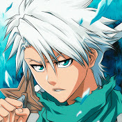

O canal Kaito é conhecido por produzir conteúdo relacionado a música, especialmente rap e
hip-hop. O
canal
ganhou popularidade por suas musicas especiais de inscritos que atigiram milhares de
visualizações,
muitas vezes
com letras relacionadas a jogos, animes, séries e cultura geek em geral.